MCP vs CLI 路线之争：Anthropic 官方给出 Tool Search + 程序化调用两个解法，两者并存不对立
来源：微信公众号 归档日期：2026-04-24 抓取状态：成功 原文字符：7968｜配图：14 张
摘要速览
MCP 因为"token 贵/schema 臃肿/不可组合"三个问题被社区批评，CLI+Skills 被认为是更好的 Agent 接入方式——Anthropic 官方博客正面回应并给出具体解法。
核心内容
- MCP 三大原罪（社区批评）：GitHub MCP 43 个工具定义占 55,000 tokens；Perplexity CTO 称 72% 上下文被 MCP 占掉；CLI 操作同样任务 token 消耗是 MCP 的 1/32
- 解法一：Tool Search（按需加载）：Agent 先描述意图，运行时只拉取匹配的几个工具，而非塞入全部工具定义 → 工具定义 token 减少 85%+，工具选择准确率不下降；工具要按意图分组，不按 API 分
- 解法二：程序化工具调用：工具返回结果不直接塞回上下文，而是在代码执行沙箱里循环/过滤/聚合，只把最终结果返回 → 复杂多步工作流减少约 37% token
- Cloudflare 案例：2,500 个 API 端点，只暴露 2 个工具（search + execute），整个工具定义仅占约 1K tokens——把 CLI 的哲学搬进了 MCP 协议（"代码编排"模式）
- 两者定位明确：本地开发环境 → CLI + Skills（轻量、快速、上下文干净）；云端生产环境（Managed Agents/移动端/Web 端，无文件系统）→ MCP + Skills（标准化、跨平台）；简单场景 → 直连 API
- MCP + Skills 打包：Anthropic 官方认可 Skills 的地位，MCP 管"能力"，Skills 管"编排"；部分第三方服务商已经开始同时发布 MCP server 和配套 Skills
可执行启发
（待补充）
我的想法
（待补充——1. SXL 的 Skills 体系是否也存在"按 API 而非按意图分组"的问题，导致某些 Skill 调用时带入了太多不相关上下文？2. Cloudflare 的"2 个工具覆盖 2500 端点"模式，是否可以作为设计新 Skill 的参考范式？）
为什么有用
SXL 当前体系用 CLI + Skills，这篇明确了边界：本地场景继续 CLI，若未来有云端部署的 Agent（如 Managed Agents），MCP + Skills 是对应方案。Tool Search 的"按意图分组工具"思路，也可以用来优化 SXL 现有 Skills 的结构设计。
适用 / 不适用场景
- 适用：需要 Agent 连接外部系统的架构决策、云端 Agent 部署场景、优化现有 MCP server 的 token 消耗
- 不适用：完全本地环境（CLI + Skills 够用，不需要 MCP）
原文：AGI Hunt
Anthropic 最新发了篇博客《Building agents that reach production systems with MCP》。
社区对 MCP 的三大批评
- token 贵：ScaleKit benchmark，GitHub MCP vs gh CLI 跑 75 轮，CLI 每月 3.2 美元 vs MCP 55.2 美元，差 17 倍；CLI 完成同一任务 1,365 tokens vs MCP 44,026 tokens，差 32 倍
- schema 臃肿：GitHub MCP 43 个工具定义全塞进上下文，一个工具定义就占 4,026 tokens；Perplexity CTO：72% 上下文窗口被 MCP 占掉
- 不可组合：OpenClaw 之父 Peter：MCP 默认污染上下文，大部分 MCP 做得不好
Anthropic 的三条路框架
| 方式 | 适合场景 |
|---|---|
| 直连 API | 简单一对一场景 |
| CLI | 本地/沙箱环境，Agent 天生说命令行语言 |
| MCP | 云端生产环境（无本地文件系统），标准化远程服务器，一个 server 通吃所有客户端 |
解法一：Tool Search（按需加载）
- 传统：43 个工具全塞进上下文，55,000 tokens，没开始干活就堆满说明书
- Tool Search：Agent 描述意图 → 运行时搜索匹配工具 → 只拉取相关几个
- 效果：工具定义 token 减少 85%+；工具按意图分组（不按 API 分）
叠加 Tool Search 后，MCP 的 token 消耗从 CLI 的 32 倍差距缩小到约 7 倍（还是贵，但不是数量级差距了）。
解法二：程序化工具调用
工具返回结果 → 代码执行沙箱里处理（循环/过滤/聚合）→ 只返回最终结果到上下文。
效果：复杂多步工作流减少约 37% token 消耗。
Cloudflare 代码编排案例
2,500 个 API 端点 → 只暴露 search 和 execute 两个工具：
- Agent 用
search找到需要的 API - 写一段脚本通过
execute在服务端沙箱里跑
整个工具定义仅约 1K tokens。这是"把 CLI 哲学搬进 MCP"。
MCP + Skills 官方认可
Anthropic 官方博客把 Skills 写进了实践方案：
- MCP：管"能力"（连接 Snowflake/Databricks/BigQuery 等）
- Skills：管"编排"（告诉 Agent 怎么用这些连接完成具体任务）
Claude 数据插件案例：10 个 Skills + 8 个 MCP servers 打包，覆盖多个数据平台。
结论：最终图景
- 本地开发环境 → CLI + Skills，轻量、快速、上下文干净
- 云端生产环境 → MCP + Skills，标准化、跨平台、认证完备
- 简单场景 → 直连 API，别瞎折腾
原文沉淀
目录
Anthropic 最新发了篇博客，标题叫《Building agents that reach production systems with MCP》，翻译过来是：《构建能触达生产系统的 Agent：MCP 实践指南》。
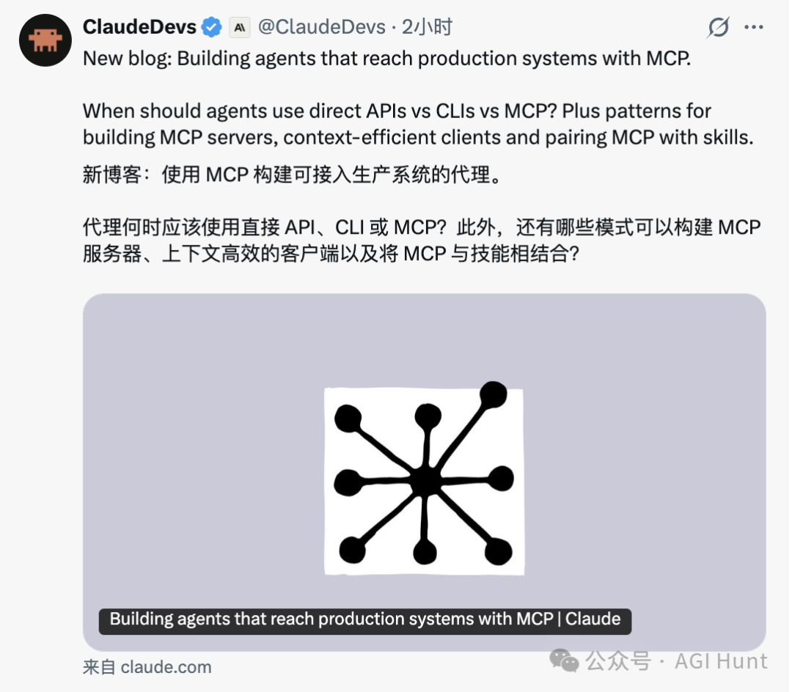
MCP 最新博客
在我去年 11 月的文章《MCP 或将成弃子》和上个月的文章《一切软件，都将为 Agent 重写》、《钉钉飞书集体抛弃 MCP，CLI 才是 Agent 的终局》中，我一直在阐述一个观点：
CLI + Skills 才是 Agent 连接外部系统的正道，因为 MCP 又贵又慢还占上下文。
但今天，MCP 的亲爹 Anthropic 自己出来再一次为 MCP 说话了。
它倒不是说「你们错了」，它说的是：「你们提的那些问题，我们有答案了。」
01
之前聊过什么
这里来补一下前情提要。
过去一个多月，社区对 MCP 的批评集中在三件事上。
ScaleKit 做了一组严格的 benchmark，拿 GitHub 官方 MCP 服务器和 gh CLI 做对照，跑了 75 轮实验。
结果是 CLI 在 token 消耗上便宜 10 到 32 倍，按月算，每月 1 万次操作，CLI 大约 3.2 美元，MCP 大约 55.2 美元。17 倍的成本差距。
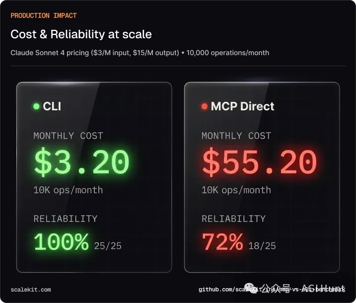
成本与可靠性对比
问题出在 schema 膨胀上。
GitHub 的 MCP 服务器带了 43 个工具定义，每次对话都得把这 43 个工具的完整描述全塞进上下文。你只是想查个仓库语言，但模型得先读完所有 43 个工具的说明书。光是一个工具的定义就占了 4,026 tokens。
Perplexity 的 CTO Denis Yarats 也表态称：Perplexity 内部正在远离 MCP，原因是 72% 的上下文窗口被 MCP 占掉了。
龙虾之父 Peter 也在播客里对痛批 MCP：
“ MCP 默认污染你的上下文，加上大部分 MCP 做得不好，总体来说不是一个很有用的范式。
而钉钉和飞书也是不约而同绕开 MCP，直接把产品「压扁」成了 CLI。在旧金山街头的随机调查里，CLI 得了 17 票，MCP 仅有 3 票。
当时我们的结论是：MCP 倒是不会死，但它会退到它该待的地方。
而 CLI，将成为 Agent 操作一切软件的默认界面。接下来，整个 SaaS 的 API surface，将全都暴露成 CLI。
02
Anthropic 的回应
而今天的这篇博客，则是 Anthropic 在重新定义什么是 MCP「该待的地方」。
博客开篇先摆了一个框架：Agent 连接外部系统有三条路，直连 API、CLI、MCP，各有各的适用场景。
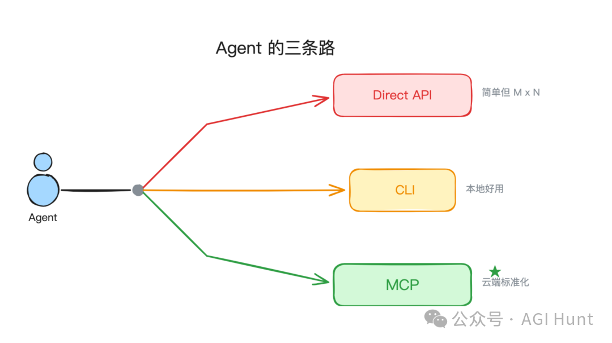
三条路
直连 API 适合简单的、一对一的场景。但如果你有 10 个 Agent 要接 10 个服务，那就是 100 个不同的集成方案，每个都要单独搞认证和工具描述。这就是经典的 M×N 问题。
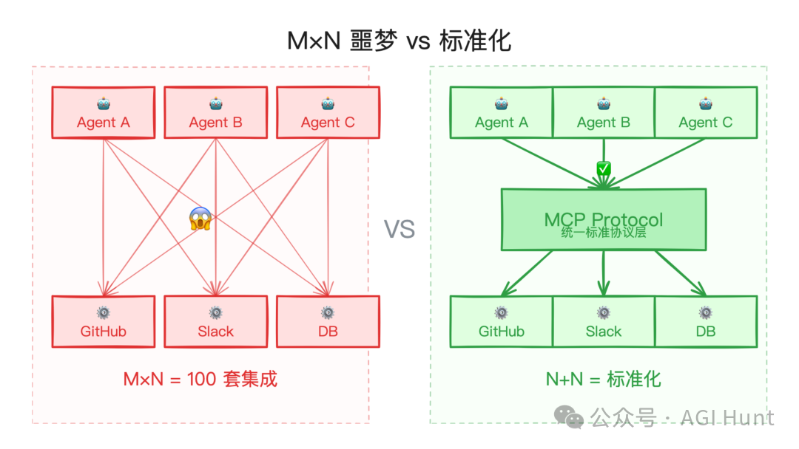
M×N 噩梦 vs 标准化
CLI 在本地和沙箱环境里确实更合适。Agent 天生就说命令行语言，--help 就能自描述，jq 就能过滤，pipe 就能组合。这一点 Anthropic 是承认的。
但博客里话锋一转：**生产级 Agent 越来越多的，正在跑在云上。
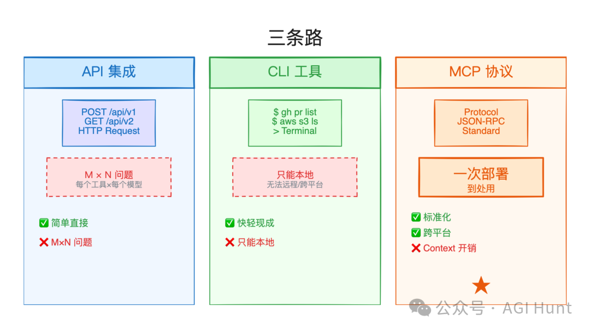
**
三条路对比：API vs CLI vs MCP
Claude Cowork、Claude Managed Agents、移动端、Web 端……这些环境里没有本地文件系统，跑不了 CLI。而 MCP 的定位，则恰恰就是为这个场景服务的：一个远程服务器，通吃所有客户端。
Claude、ChatGPT、Cursor、VS Code，一个 MCP 服务器全覆盖。
博客里给出的一个数据是：MCP SDK 的月下载量从年初的 1 亿涨到了 3 亿。
社区怎么争论是一回事，但事实上则是：用脚投票的人越来越多了。
03
Token 解法
这应该算是整篇博客中，最为关键的部分了。
之前社区骂得最狠的就是 token 膨胀。Anthropic 这次则直接给了两个解法。
第一个叫 Tool Search。
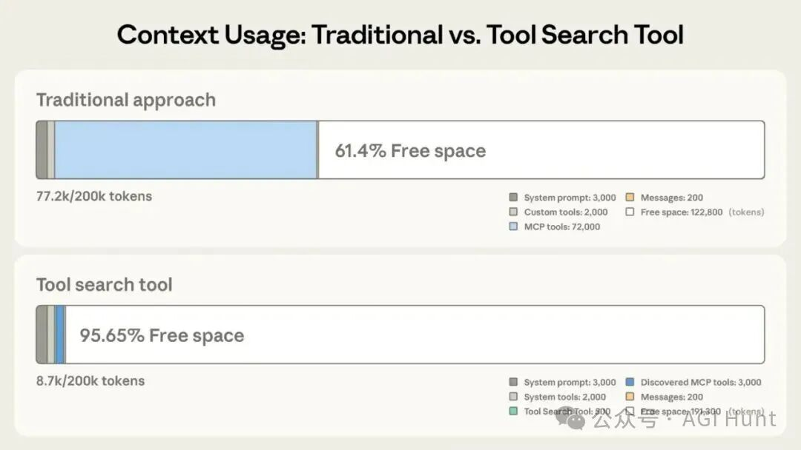
Context Usage 传统方式 vs Tool Search 对比
之前的做法是把所有工具定义一股脑塞进上下文。43 个工具，55,000 tokens，还没开始干活，工作台就被说明书堆满了。
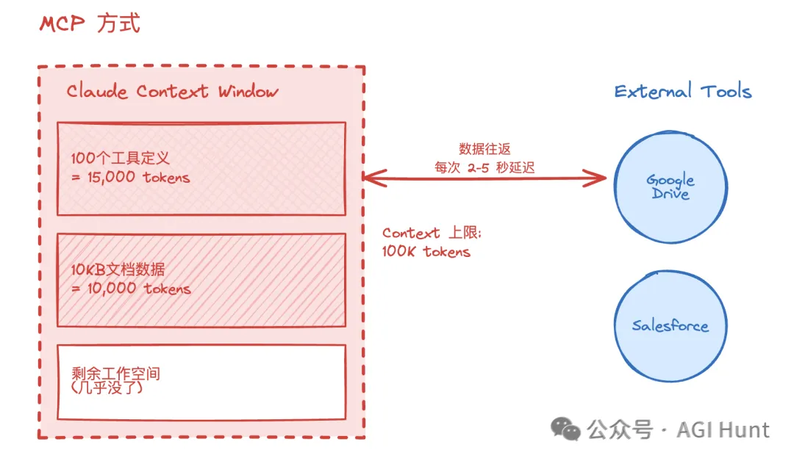
现在的做法是按需加载。Agent 先描述它想做什么，系统在运行时搜索相关工具，只把匹配的几个拉进来。
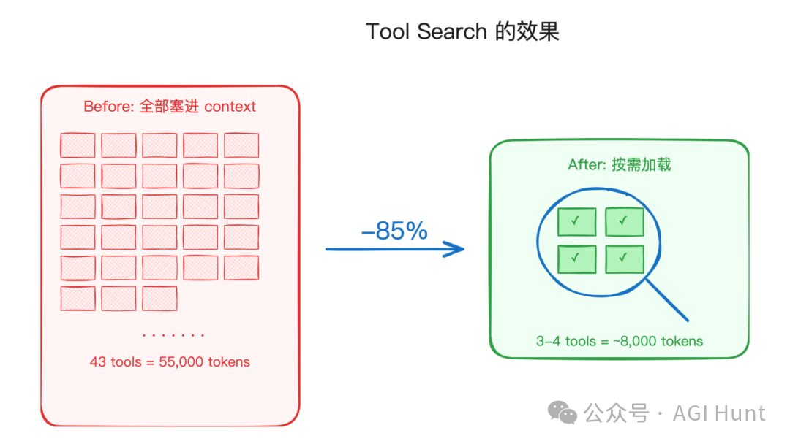
Tool Search 效果
博客给出的测试数据是：工具定义的 token 消耗减少了 85% 以上，工具选择的准确率没有下降。
工具要按意图分组，别按 API 分。
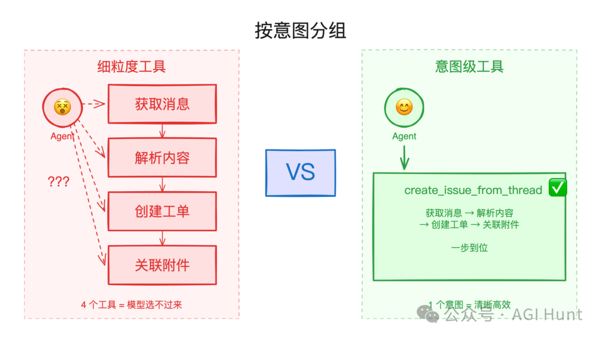
按意图分组：细粒度工具 vs 意图级工具
而之前 ScaleKit 测出来 GitHub MCP 查仓库语言要 44,026 tokens，CLI 只要 1,365 tokens，差 32 倍。如果 Tool Search 能砍掉 85% 的工具定义 token，那 MCP 的总消耗大概能降到 10,000 tokens 左右。
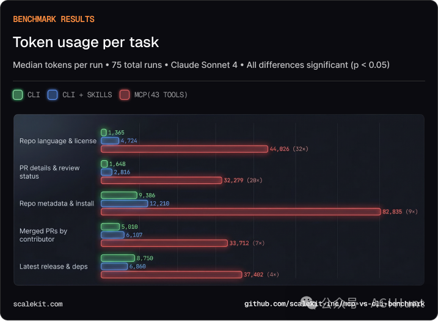
ScaleKit Token 消耗对比
跟 CLI 的差距，从 32 倍缩到了大约 7 倍。
还是比 CLI 贵，但至少不是一个数量级的差距了。
第二个解法叫程序化工具调用。
这个思路其实跟《MCP 或将成弃子》中的核心洞察算得上是一脉相承：别让模型当搬运工，让它写代码。
工具返回的结果不再直接丢回给模型，而是在代码执行沙箱里处理。Agent 可以在沙箱里循环、过滤、聚合，只把最终结果返回到上下文。
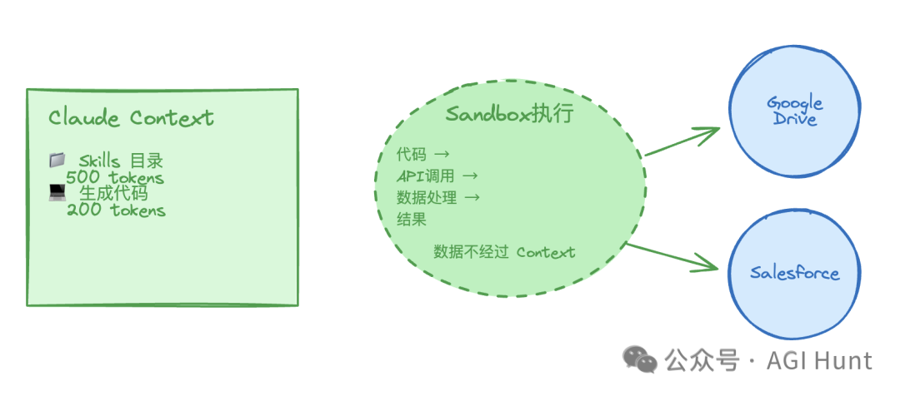
博客里说这个方案，在复杂多步工作流上减少了约 37% 的 token 消耗。
两个方案叠加起来，MCP 的 token 问题虽然没有彻底解决，但确实离 CLI 差的并不太多了。
04
Cloudflare 的实践
博客里有个关于 Cloudflare 的案例，我们可以来看一下。
Cloudflare 的 MCP 服务器，覆盖了大约 2,500 个 API 端点。如果按传统方式，把这 2,500 个端点的工具定义全塞进上下文，那画面简直就是美到不忍直视了……
而 Cloudflare 的做法是只暴露 2 个工具：search 和 execute。
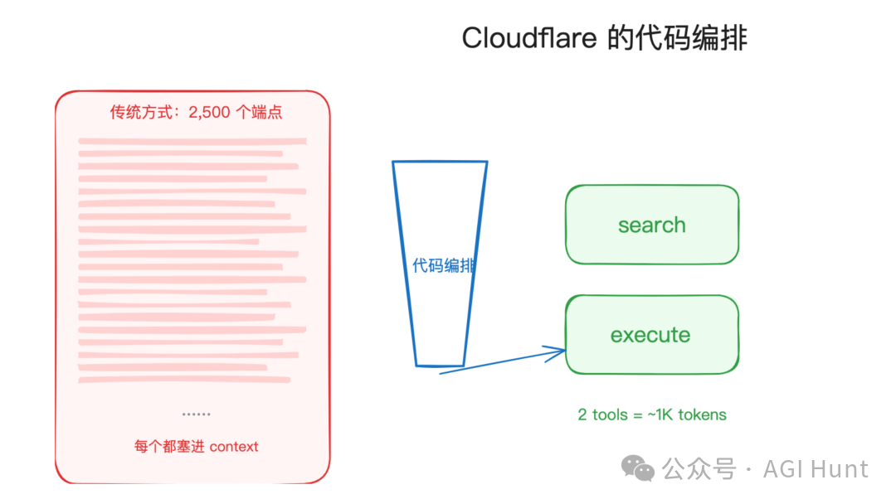
Cloudflare 代码编排
Agent 先用 search 找到需要的 API，然后写一段简短的脚本，通过 execute 在服务端沙箱里跑。整个工具定义，只占大约 1K tokens。
这个模式叫「代码编排」。
相较而言，CLI + Skill 的思路是：Skill 告诉 Agent「怎么干」，CLI 提供「用什么干」，Agent 写代码调用，中间数据不经过上下文。而 Cloudflare 这个 MCP 方案，也可以说是把 CLI 的哲学搬进了 MCP 协议里。
区别在于：它跑在云端，走的是 MCP 协议，而不是本地的命令行。
所以，Anthropic 真正想说是：MCP 和 CLI 不是对立的，好的 MCP 服务器应该像 CLI 一样设计。
05
Skills 转正
博客专门有一节讲 MCP 和 Skills 的关系。
Anthropic 的说法是：MCP 管「能力」，Skills 管「编排」。
MCP 让 Agent 能连上 Snowflake、Databricks、BigQuery 这些服务，Skills 告诉 Agent 该怎么用这些连接来完成具体任务。
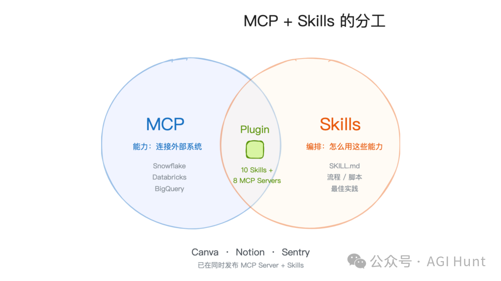
MCP + Skills
Claude 的数据插件就是一个例子：10 个 Skills + 8 个 MCP servers 打包在一起，覆盖了 Snowflake、Databricks、BigQuery、Hex 等平台。
而值得留意的是，Canva、Notion、Sentry 这些第三方服务商，已经开始在发布 MCP 服务器的同时附带 Skills 了。
MCP 社区甚至在开发一个扩展，让 Skills 可以直接从 MCP 服务器分发，API 升级的时候 Skills 自动跟着更新版本。
回看 Peter 在播客里说的：
“ MCP 推动了很多公司去做 API，这是好的。我现在可以看一个 MCP 然后把它做成 CLI。
而现在 Anthropic 的态度是：你说得对，Skills 确实不可或缺。但 MCP 不需要被替换掉，它可以和 Skills 一起发布、共存。
06
MCP 的地盘
把这篇博客和我们之前的文章一起来看，其实也并不矛盾。
我们说 MCP 有三个问题：token 贵、schema 臃肿、不可组合。
Anthropic 这篇博客给了三个对应的回答：Tool Search 解决 schema 臃肿（减 85%），程序化调用解决不可组合（让 Agent 写代码处理），代码编排模式解决 token 贵（Cloudflare 的 2 个工具覆盖 2500 端点）。
我们说 CLI + Skills 才是正道。Anthropic 也并不反驳，而是把 Skills 写进了官方的实践博客中，还给出了 MCP + Skills 的打包方案。
但 Anthropic 加了一条不一样的点：当 Agent 跑在云上，CLI 够不到的地方，MCP 是唯一的选择。
你的 Agent 跑在 Claude Cowork 里，跑在 Managed Agents 里，跑在手机上，它没有终端，没有文件系统，没法 pip install 一个 CLI。这时候一个标准化的远程 MCP 服务器，加上 OAuth 认证和 Vaults 凭证管理，确实是更为通用和合理的方案。
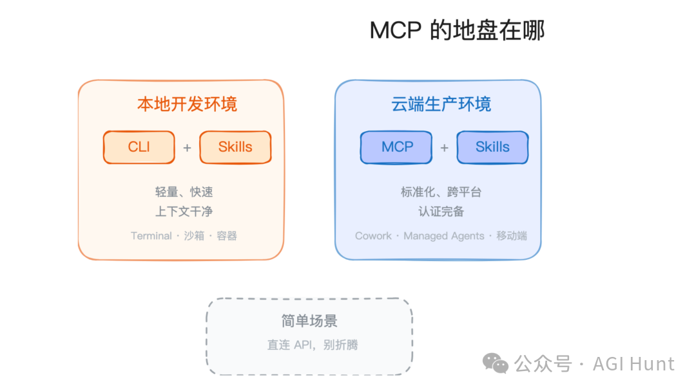
发展图景
所以目前来看，接下来的图景大概是这样：
本地开发环境 → CLI + Skills，轻量、快速、上下文干净。
云端生产环境 → MCP + Skills，标准化、跨平台、认证完备。
简单场景 → 直连 API，别瞎折腾。
所以，MCP 并没有死。
它当然并非万能方案，但它正在成为云端 Agent 的标准化接入层。
◇ ◆ ◇
相关链接：
• Anthropic 博客原文：https://claude.com/blog/building-agents-that-reach-production-systems-with-mcp
归属：[[02-输入/按主题/工具与技术/_index|工具与技术]]